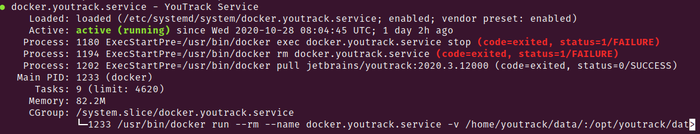
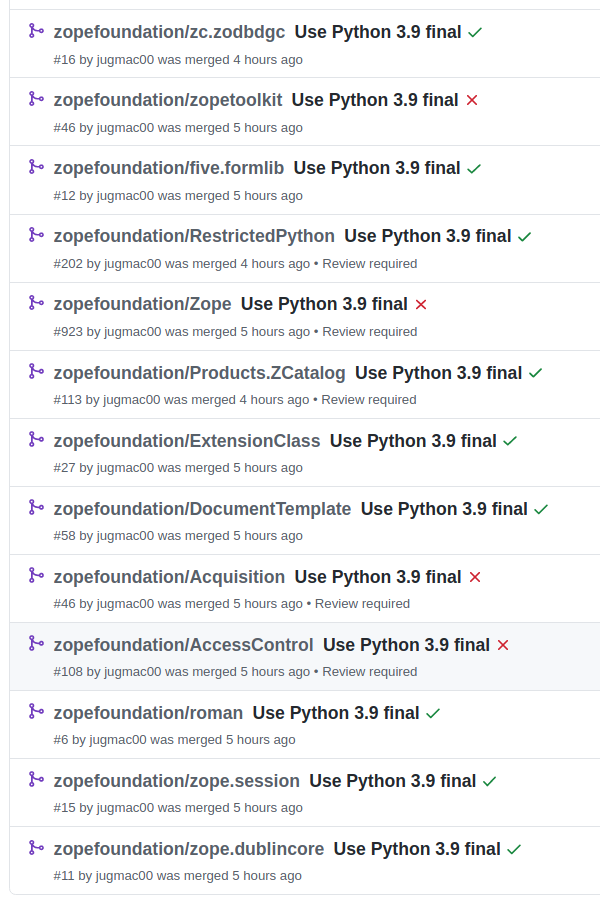
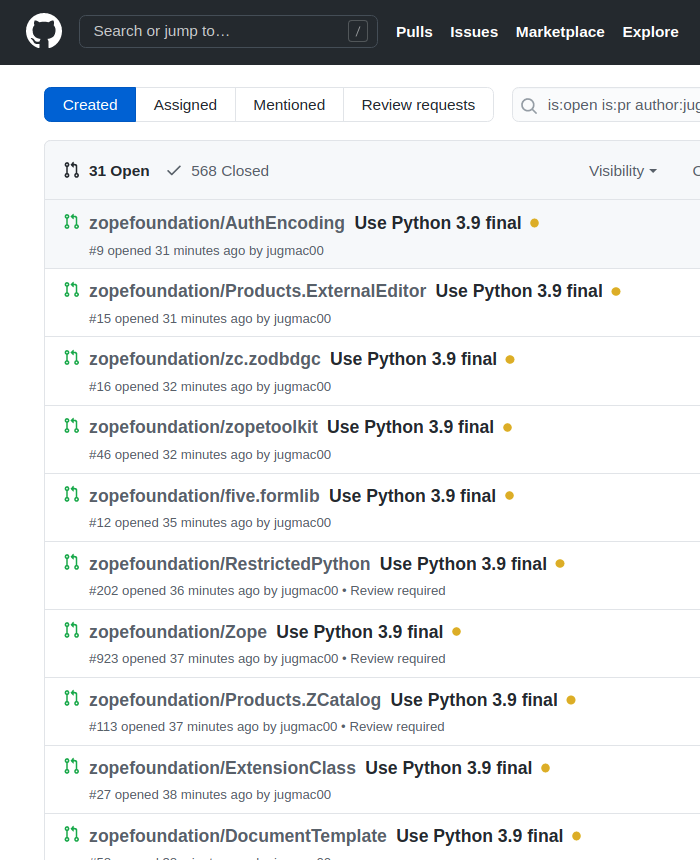
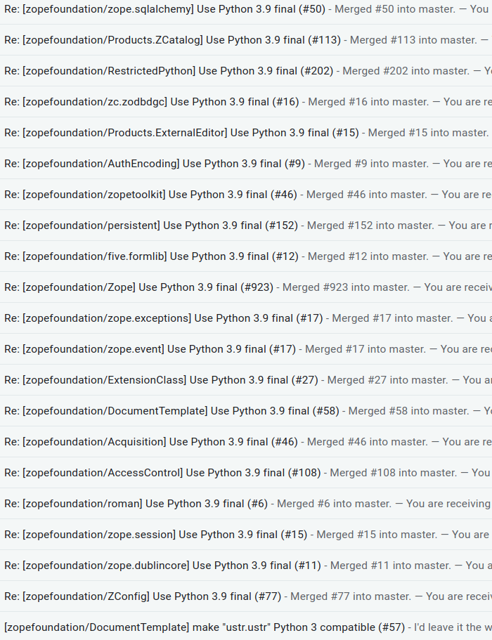
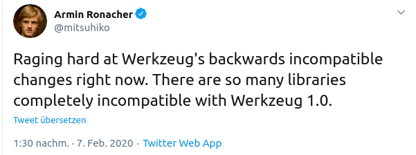
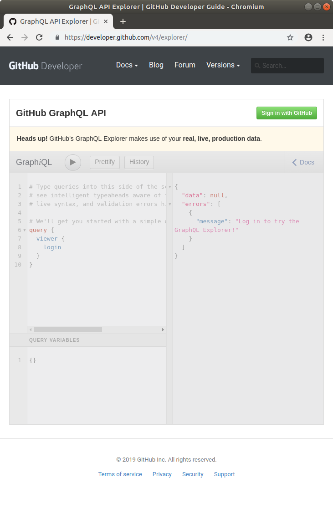

How do you make type annotations available to the users of your library?
Well, you just type annotate your library, right?
No!
But let's step back for a moment.
This morning I read David Lord's announcement that Flask, Jinja, Click, Werkzeug, MarkupSafe, and ItsDangerous are now fully type annotated, and new releases will be available next week.
Ok, as I typed Flask-Reuploaded almost a year ago, I certainly noticed that Flask was not typed back then, but external type information was provided via typeshed, which I remember lively, as I had to add a missing type annotation for Werkzeug.
I immediately wondered, how the type checkers then would know whether to use the inline type information or the type stubs from typeshed.
Anthony Sottile responded on the Twitter thread, that PEP 561 handles this and he linked to one of his videos.
In short - you need to include an empty py.typed in your repository/package.
What?
So, this basically means the applied type annotations have been in vain - for almost an entire year.
I am not the only one bitten by that. I am in very good company.
By the way... py.typed has to be in your package root, not necessarily in your git root!
So, we know what to do, but how?
This depends on your build backend... and some more things,
like whether you prefer setup.py or setup.cfg,
whether you prefer to use package_data or rather include_package_data and use a MANIFEST.in...
Nobody claimed Python packaging is easy!
After adding py.typed to my repository,
the indispensible check-manifest told me what to do:
❯ check-manifest
lists of files in version control and sdist do not match!
missing from sdist:
py.typed
suggested MANIFEST.in rules:
include *.typed
or simply add e.g. ...
include src/your_package/py.typed
P.S.: Do not forget to add the include_package_data=True directive to your setup.py,
otherwise py.typed will be included in the sdist, but not in the wheel.
Sounds logical? Right... :-/
If you do not use a MANIFEST.in, but setuptools with a setup.py...
setup(
package_data={"your_package": ["py.typed"]},
)
While we are at it... take care that py.typed is not matched by exclude_package_data.
Got it? Almost :-)
You also need to make sure you have the zip_safe=False directive set.
If you prefer a setup.cfg over a setup.py...
[options.package_data]
your_package = py.typed
If you are into poetry...
[tool.poetry]
packages = [
{include = "your_package/py.typed"},
]
No clue. Do you know? Drop me a line via email or twitter, contact details see https://jugmac00.github.io
I want to end this journey into the depths of Python packaging with the famous words of a colleague on mine:
"Kaum macht man's richtig, schon geht's."
(Translation: When you start doing it the right way, it will eventually work out.)
Every once in a while, you may read that one of your favorite used packages announces a new version.
Sometimes even a so-called alpha version is announced.
The maintainers then politely ask you, the user, to test the package, and give feedback if anything is broken.
When the upcoming pytest version 6 had been announced, I wrote a short instruction on how to install pre-releases.
This time, tox, the virtualenv management and test tool, announced a new version 4, but it is not just a new version, it is a complete rewrite by Bernát Gábor!
So, if you use tox, and you certainly should, testing your package with tox 4 alpha is highly recommended.
Stop reading now, and try it - I am serious!
I did test an early alpha version, and found quite a couple of issues for the projects I maintain ( 1 2 3 4 5 6 ).
They were all addressed in no time.
Reporting issues in pre-releases is important both for you, so you can use the new version once it gets released without any hassle, and also for the maintainer, who does not get stressed out completely on the day the new package gets released.
End of story...
Not yet!
Maybe you know that I am contributor to the Zope project. Zope is the bedrock of Python web frameworks. And while development has come to a sustainable path, it is still used out in the wild.
One characteristic, which I miss in other projects, is that not only the core project, but also hundreds and hundreds of plugins are managed together in one GitHub organization.
I mentioned the advantages already a couple of times.
All contributors can access all packages, fix minor issues, which means no package is left behind, and no package depends on the good will of a single maintainer, who always starts euphoric, and at one point in time neglects the project because of real life or switching company or language.
Ok, so we use tox in most of the roundabout 300 active packages.
How would I be able to run tox alpha on all of them?
I already wrote about all-repos by Anthony Sottile previously in How to create hundreds of pull requests with a single command?, but this time it is different.
If you have not encountered all-repos yet...
In short, with all-repos you can clone all of your and your organization's repositories, find files, grep in them, mass apply changes to them and finally create pull requests, all from the command line.
But afaik all-repos does not offer an easy way to run a custom command on all repositories.
Also, unlike e.g. pytest, it also does not offer any plugin mechanism, but ...
It is super easy to use all-repos as a library.
While the README offers a nice overview of the API, I directly dug into the source code to find some inspiration on how to write my custom all-repos command line script.
all-repos offers a couple of command line entry points and also a couple of example usages, and after looking around a bit, I chose the script for all-repos-list-repos as a template, which basically does everything I wanted, except executing tox.
So, all-repos exposes a load_config method,
with which I get hold of all repositories,
and instead of just printing their paths as in all-repos-list-repos,
I need to check whether they contain a tox.ini file,
and if so, run tox4 alpha.
After that I check the return code of tox. If the run succeeds, and it does for tox3 otherwise our CI would not be green, all is ok, otherwise I need to collect the repo name for later inspection.
At the end I just print the result.
def main(argv: Optional[Sequence[str]] = None) -> int:
parser = argparse.ArgumentParser(
description='Run tox4 on all cloned repositories.',
usage='python main.py -C configfile',
)
cli.add_common_args(parser)
cli.add_output_paths_arg(parser)
args = parser.parse_args(argv)
config = load_config(args.config_filename)
results = {"notox": [],
"successful": [],
"problems": [],
}
for i, repo in enumerate(config.get_cloned_repos()):
path_repo = os.path.join(config.output_dir, repo)
path_tox = os.path.join(path_repo, "tox.ini")
if os.path.exists(path_tox):
print(f"about to run tox for {repo}, {i+1} of {len(config.get_cloned_repos())}")
run = subprocess.run(["tox4", "-e py39", "-c", path_tox], capture_output="True")
if run.returncode == 0:
print(f"tox4 run successful for {repo}")
results["successful"].append(repo)
else:
print(f"tox4 run failed for {repo}")
results["problems"].append(repo)
else:
results["notox"].append(repo)
print(f"{repo} does not contain a tox configuration. Boo!")
print(results)
return 0
The latest version of the script is available on GitHub.
The end...?
Not yet...
Super easy, right?
Yep, except after quite some time, my Ubuntu machine got completely unresponsive.
Not even keyboard presses gave any reaction...
After a hard reset, I inspected syslog, and found out that my machine ran out of memory and started killing processes.
But why?
I had another look at my script and still had no clue.
I asked at the tox discord channel, and both Anthony and Bernát gave me some valuable tips on how to improve my code.
I ran my script again, and after quite some time it made boom again.
Finally, with the help of a system monitoring tool, I pinpointed the problem to a single repository, which for some yet to be investigated reasons, started an endless setuptools update circle and ate memory like crazy.
After I excluded this one repository, my script finally completed, and showed me the result.
tox 4 alpha 6 on 288 Zope repositories, 17 without tox, 62 successful, 208 broken builds
Bernát's reaction: "a 22% success here, not that great news :smile: but on plus side seems if we fix zope we should be in a decent place"
This was exactly my intention! :-)
P.S.: By the way, there are certainly not 208 different errors / bugs, it is more like there are roundabout four different error cases, which I will have a look at myself at first, and when it turns out this is not a problem in the package, I will report an issue in the issue tracker of tox.
Thanks to Anthony and Bernát for all your work in the Python open source eco system, and for always being friendly and helpful!
package init file missing warning when running tox4-e .[test] -c constraints.xtdeps = .[test]zope.testrunner #74cgi has no attribute escape #8For simplicity, let's the call the app Dated HR, a tool to "Simplify your HR work", which offers support for time tracking, holiday, payroll...
So far so good, and even better, as it is an enterprisy Windows software, which needs to be configured with IIS and a MSSQL database, a colleague of mine installed it on an internal Windows server.
The app makes a web GUI available under http://nemesis.company.local, which would work like a charm - for our colleagues at site, but not for the colleagues from the other sites.
But certainly, it is 2020, you want encryption via https, and also the other colleagues need web access.
Setting up nginx as reverse proxy is business as usual.
Also, adding https via Certbot can't get much simpler: https://certbot.eff.org/
So far, so good, the app is now available via https://hr.company.com
The app seems to work, but when clicking on a special button (I refrain from calling it a link, as it is a humongous JavaScripty-eventlistener-from-data-attribute-fetching something), I get a ...
This site cannot be reached" nemesis.company.local’s server IP address could not be found.
Having a look at the HTML source,
a wild mix of relative and absolute URLs show up,
where the latter have http://nemesis.company.local hardcoded.
If this was an open source app, I could
...but... did I mention it is an enterprisy app?
So, let's tell the Windows admin to configure the app properly.
Turns out, there is no option.
Asking vendor for support also did not work out:
The reported behavior cannot be changed.
Well, maybe you cannot... but I can - possibly.
nginx, my favorite web server, can rewrite HTML on the fly, via the http_sub_module.
While this module is not compiled into nginx by default, luckily the Ubuntu developers included it.
So, adding the following snippet to my location block should do the trick...
sub_filter 'http://nemesis.company.local' 'https://$host';
sub_filter_once off;
where
After restarting nginx, I still get the same error. bummer.
I double checked, no more occurrences in the generated HTML, CSS or JavaScript...
Hm, let's have a look at the HTTP headers in the debug console.
Here we go, the location header of the response had the following value...
http://nemesis.company.lcoal/.../.../.../.../Default.aspx
Once more, after some googling, the nginx documentation offered a solution via the proxy_redirect directive.
While proxy_redirect sounds a bit odd,
the description makes more sense:
Sets the text that should be changed in the "Location" and "Refresh" header fields of a proxied server response.
Very nice, let's add the following snippet to my location block...
proxy_redirect http://nemesis.company.local https://$host;
After restarting nginx once more, everything works as intended!
The complete location block looks like...
location / {
proxy_pass http://nemesis.company.local:80/;
sub_filter 'http://nemesis.company.local' 'https://$host';
sub_filter_once off;
proxy_redirect http://nemesis.company.local https://$host;
}
Finally, the enterprisy app works like a charm - thanks to open source!
P.S.: While debugging the errors, I found several seriously outdated JS libraries with some known CVE entries.
Looking forward to the vendor's answer!
At very least the developers of this very app show good humor, as they named the variables after cocktails, which I can relate to.
Cheers! Prost! Na zdraví!
Until recently, I saw no good reason to use Docker, as my deployment tool of choice produces approximately identical builds, locally on my Ubuntu laptop, on staging and on production.
But time does not stand still and especially as I have to deploy a Java application, it was time to rethink my strategy, as I do not want to play the which Java runtime environment plays nicely together with which app version game.
Fortunately, JetBrains offers pre-built docker images for YouTrack, my favorite issue tracker, which is the app I plan to install today.
With a pre-built Docker image, running the app could be as simple as ...
docker run -it --name youtrack-server-instance \
-v {path to data directory}:/opt/youtrack/data \
-v {path to conf directory}:/opt/youtrack/conf \
-v {path to logs directory}:/opt/youtrack/logs \
-v {path to backups directory}:/opt/youtrack/backups \
-p {port on host}:8080 \
jetbrains/youtrack:{version}
... but it is both tedious to type this long command, and also the process would not survive a reboot of the host system.
NOTE: Do you know the difference between
docker create,docker runanddocker start?.
While we are here, let's dissect this complex command:
run creates and starts a container-it provides an interactive tty, ie show output in the terminal--name gives the container a name-v maps folders between the host and the container-p maps ports between the host and the containerjetbrains/youtrack:{version} is finally the docker imageInstead of manually starting the docker service, let's use systemd to start it, even after a reboot.
JetBrains offers a concise documentation on how to do this.
Basically, just create a unit file at /etc/systemd/system/docker.youtrack.service,
with the following content...
[Unit]
Description=YouTrack Service
After=docker.service
Requires=docker.service
[Service]
TimeoutStartSec=0
Restart=always
ExecStartPre=-/usr/bin/docker exec %n stop
ExecStartPre=-/usr/bin/docker rm %n
ExecStartPre=/usr/bin/docker pull jetbrains/youtrack:<version>
ExecStart=/usr/bin/docker run --rm --name %n \
-v <path to data directory>:/opt/youtrack/data \
-v <path to conf directory>:/opt/youtrack/conf \
-v <path to logs directory>:/opt/youtrack/logs \
-v <path to backups directory>:/opt/youtrack/backups \
-p <port on host>:8080 \
jetbrains/youtrack:<version>
[Install]
WantedBy=default.target
... where, on a very high level,
Finally, you can enable it via systemctl enable docker.youtrack,
so it starts after the next reboot,
and start and stop it manually via sudo service docker.youtrack start / sudo service docker.youtrack stop.
This all worked out perfectly,
and YouTrack was available via my browser,
except I was worried a bit about the output of systemctl status docker.youtrack...

Why are there two failures?
From all I knew about Docker, the run command should create and start a container, so the container should be persistent, even after a restart.
Which would finally mean, systemd should successfully stop and delete the docker container e.g. on restart.
Let's have another look at the Service section from above, especially at the following two lines.
ExecStartPre=-/usr/bin/docker exec %n stop
ExecStartPre=-/usr/bin/docker rm %n
ExecStartPre is pretty self explaining, and means "execute this command before starting the service"-, just before the command, means it is ok when the following command fails = do not stop on failure!%n expands to the service, ie docker.youtrack.serviceSo, this means, failures are expected!
Let's have a look at the run command...
ExecStart=/usr/bin/docker run --rm --name %n
ExecStart is the main processdocker run, as we now know, creates and starts a container--rm - here we go, this makes sure the container is deleted on exit!--name sets the name of the container%n is the placeholder for the serviceEverything is working as expected!
The stop and the delete commands are only safe guards,
just in case another container with the same name exists,
or is even running.
Running pre-built Docker images is a breeze.
But you certainly should know the basics :-)
... or "How to win #hacktoberfest"?
Seriously...
NOTE: If you are not interested in the story behind, I also created a concise "today-I-learned" post.
The company I work for has been using Zope, the granddaddy of Python web application servers, for more than 15 years.
What I love most about Zope, except for the stability and the low record of security issues, is the small but fine community.
Especially I love the fact, that almost all Zope plugins,
which are sometimes called Products,
are united in the zopefoundation GitHub organization,
with a current count of 392, of which 330 are active.
Combine the idea of a central repository with the ease of anybody to contribute, and you'll see the obvious benefits immediately:
Do you rely on one package, and there was a breaking change in a dependency? Do you need support for the newest Python version? No problem, either ask somebody for help or fix it yourself. No single repository will be left behind.
Compare this to other frameworks, where most of the plugins are maintained by single persons, which start extremely enthusiastic and at some point in time loose interest.
Having to maintain hundreds of repositories certainly comes with a cost.
It is especially tedious, when you have to do small changes to lots or even all repositories.
We, the Zope maintainers/contributors,
need to test our plugins against Python 3.9,
but Travis,
the CI system we use,
only offered Python 3.9-dev, but no final version.
So we tested against 3.9-dev.
Travis finally provides Python 3.9 final.
But how would we update all repositories which still use Python 3.9-dev?
Manually? No way!
all-repos provides a set of CLI tools, which enables you to e.g. clone all repos of a GitHub organization, search in them, do mass updates to them, and even finally create pull requests.
all-repos was created by one of the many Anthony Sottile clones out there,
without them, the Python world would not be the same
(Think of pre-commit, pyupgrade, tox, flake8, ...).
Before you can start to work with all-repos,
you need to
I assume you are able to install a Python package, either via pipx, in a virtual environment, or ...
Also, the token creation is straight forward. A token basically allows programs to interact with GitHub on your behalf.
The configuration is done with a JSON file, which is named all-repos.json by default.
Mine looks like so
{
"output_dir": "output",
"source": "all_repos.source.github_org",
"source_settings": {
"api_key": "xxx",
"org": "zopefoundation"
},
"push": "all_repos.push.github_pull_request",
"push_settings": {
"api_key": "xxx",
"username": "jugmac00"
}
}
where
output_dir is the folder where the repositories are cloned intosource is the way how to get hold of the repositories, in our case it is a GitHub organizationapi_key is needed in order to access / write to the repositoriesorg is the corresponding GitHub organizationpush configures what should be done after changes had been applied, here it is "create a pull request on GitHub"username is the username which should be used for the pull requestOnce this is done, we are ready to go.
The most basic task is to clone all repositories. Too easy? Think of Zope`s 300+ repositories.
❯ all-repos-clone
Initializing zopefoundation/zope.dottedname
Initialized empty Git repository in /tmp/Zope/output/zopefoundation/zope.dottedname/.git/
Initializing zopefoundation/zc.relationship
Initialized empty Git repository in /tmp/Zope/output/zopefoundation/zc.relationship/.git/
Initializing zopefoundation/zope.app.dependable
...
Already one and a half year ago, I evaluated all-repos, but struggled a bit to wrap my head around advanced concepts like the so-called autofixers.
On the other hand, grepping was and is straight forward, e.g. the following command looks for 3.9-dev in all repositories' .travis.yml file.
❯ all-repos-grep --repos-with-matches 3.9-dev -- '.travis.yml'
output/zopefoundation/AccessControl
output/zopefoundation/Acquisition
output/zopefoundation/AuthEncoding
output/zopefoundation/DocumentTemplate
...
where
all-repos-grep is the CLI tool we use => grep on all repositories--repos-with-matches => only show repositories with a match3.9-dev => the string we are looking for.travis.yml => only look in files named .travis.ymlThis is all fun, but how to get this party started?
.travis.yml filesNOTE: When you are on macOS, please have a look at the documentation as the following command uses GNU sed, which may not be present on macOS.
While all-repos-grep and other CLI commands like all-repos-find-files are read-only,
the real fun starts with so-called autofixers.
Basically, an autofixer applies changes to all repositories which match a certain pattern.
While there are pre-built autofixers like all-repos-sed,
which we will use in a minute,
you can also create autofixers yourself.
Ok, so we can bulk-modify repositories, but what then? How do I commit the changes? How do I create a branch? A pull request?
Ok, first things first, let's try to update all repositories...
all-repos-sed --commit-msg "Use Python 3.9 final" s/3.9-dev/3.9/g -- '.travis.yml'
where
all-repos-sed is the CLI command we use => use sed on all repositories--commit-msg "Use Python 3.9 final" => use a custom commit messages/3.9-dev/3.9/g => replace 3.9-dev with 3.9.travis.yml => only look in .travis.yml filesStill, what about the branches, the commits and the pull request...? Never mind, let's give it a go...
/tmp/Zope
❯ all-repos-sed --commit-msg "Use Python 3.9 final" s/3.9-dev/3.9/g -- '.travis.yml'
***output/zopefoundation/Products.PythonScripts
$ git clone --quiet output/zopefoundation/Products.PythonScripts /tmp/tmp_ve9eest
$ git remote set-url origin git@github.com:zopefoundation/Products.PythonScripts
$ git fetch --prune --quiet
$ git checkout --quiet origin/HEAD -b all-repos_autofix_all-repos-sed
$ sed -i s/3.9-dev/3.9/g .travis.yml
$ git diff origin/HEAD --exit-code
***output/zopefoundation/ZODB
$ git clone --quiet output/zopefoundation/ZODB /tmp/tmp56hy_wls
$ git remote set-url origin git@github.com:zopefoundation/ZODB
$ git fetch --prune --quiet
$ git checkout --quiet origin/HEAD -b all-repos_autofix_all-repos-sed
$ sed -i s/3.9-dev/3.9/g .travis.yml
$ git diff origin/HEAD --exit-code
***output/zopefoundation/transaction
$ git clone --quiet output/zopefoundation/transaction /tmp/tmpt5z_p_jc
$ git remote set-url origin git@github.com:zopefoundation/transaction
$ git fetch --prune --quiet
$ git checkout --quiet origin/HEAD -b all-repos_autofix_all-repos-sed
$ sed -i s/3.9-dev/3.9/g .travis.yml
$ git diff origin/HEAD --exit-code
***output/zopefoundation/BTrees
$ git clone --quiet output/zopefoundation/BTrees /tmp/tmpgw8mhej5
$ git remote set-url origin git@github.com:zopefoundation/BTrees
$ git fetch --prune --quiet
$ git checkout --quiet origin/HEAD -b all-repos_autofix_all-repos-sed
$ sed -i s/3.9-dev/3.9/g .travis.yml
$ git diff origin/HEAD --exit-code
***output/zopefoundation/persistent
$ git clone --quiet output/zopefoundation/persistent /tmp/tmpk7vmtr0w
$ git remote set-url origin git@github.com:zopefoundation/persistent
$ git fetch --prune --quiet
$ git checkout --quiet origin/HEAD -b all-repos_autofix_all-repos-sed
$ sed -i s/3.9-dev/3.9/g .travis.yml
$ git diff origin/HEAD --exit-code
diff --git a/.travis.yml b/.travis.yml
index dba5aa4..dda3ec5 100644
--- a/.travis.yml
+++ b/.travis.yml
@@ -17,7 +17,7 @@ python:
- 3.6
- 3.7
- 3.8
- - 3.9-dev
+ - 3.9
jobs:
include:
$ git commit --quiet -a -m 'Use Python 3.9 final
Committed via https://github.com/asottile/all-repos'
$ git push origin HEAD:all-repos_autofix_all-repos-sed --quiet
remote:
remote: Create a pull request for 'all-repos_autofix_all-repos-sed' on GitHub by visiting:
remote: https://github.com/zopefoundation/persistent/pull/new/all-repos_autofix_all-repos-sed
remote:
Pull request created at https://github.com/zopefoundation/persistent/pull/152
...
Holy moly! It's a thing!
One after another,
this awesome tool goes through all repositories,
creates a branch,
updates .travis.yml,
commits the changes,
and creates a pull request,
all automagically!
Yeah, I know, that is what it is supposed to do, but holy sh... it's real!


Poor co-maintainers, who need to review all those pull requests!
One already asked, whether it is possible to directly push to master... yes, it is!

This amazing tool works like a charm! For this task, it saved me at least a couple of hours.
And there is much more it can do!
Thanks a lot, Anthony!
all-repos certainly is another invaluable asset for working as a professional software developer,
and it especially helps maintaining open source projects on a large scale.
2020-10-28
2020-03-11
It all started with this error message:
File "/Projects/xxx/venv/lib/python3.7/site-packages/flask_uploads.py", line 26, in <module>
from werkzeug import secure_filename, FileStorage
ImportError: cannot import name 'secure_filename' from 'werkzeug''
Trying to build my Flask application, the above error message was generated,
as Werkzeug, a very important library in the Flask ecosystem,
changed its API in version 1.0, back in February 2020.
This broke a lot of plugins.

As my app relies on Flask-Uploads, I had a look at the problem
and finally provided a pull request
to the Flask-Uploads repository on GitHub.
This pull request was merged, but the maintainer deliberately chose not to release a new version to PyPi, though I even offered my help.
You can read his final argument here https://github.com/maxcountryman/flask-uploads/issues/29#issuecomment-614218327
The latest version on PyPi (0.2.1) is from 2016, and that one does not work with a current Flask/Werkzeug version.
You certainly could pin Flask-Uploads to a GitHub commit ID.
I think this is inconvenient at least, and doing so caused me a lot of problems, as pinning a GitHub commit ID worked on my dev machine, but Travis CI was broken. For reasons.
While I finally managed it somehow, I felt a bit sad for all those developers asking for help and a new release.
Fast forward six months, there is still no new release.
I have thought about this situation a lot. On the one hand, the GitHub repository is kinda up to date (the test suite is broken, and some more... ), on the other hand there are many developers out there having trouble to fix their broken app.
So, yesterday I finally decided to fork this package,
and after fixing the test suite and some more housekeeping,
I released a new version to PyPi,
most importantly with a fix to the broken Werkzeug import - and tons more.
As only the original maintainer has access to Flask-Uploads on PyPi,
I had to create a new name:
One of my main goals is to stay compatible with Flask-Uploads.
It even is a drop-in replacement!
This means, instead of installing Flask-Uploads,
you only have to install Flask-Reuploaded and your migration work is finished.
You do not have to change a single line of code.
The package is found here https://pypi.org/project/Flask-Reuploaded/
And the repository is here https://github.com/jugmac00/flask-reuploaded
Speaking of repository, while I have fixed the broken test suite, set up CI and more, there is still lots to do - especially beginner friendly tasks. If you ever wanted to contribute to open source, why not to the library you use? There are many open issues.
When you now think... huh, this one guy... why should I use his package? Maybe he is too busy soon, too?
The company I work for relies on Flask-Reuploaded - so there is big motivation to keep it working.
Also, I love Python and open source, and I am super open for other contributors.
As a matter of fact, my dream would be a Flask Umbrella organization,
which the Flask plugin developers could join and share their workload more evenly.
See my proposal to the Pallets project here:
https://github.com/pallets/meta/issues/28
This all said... I am super thankful to Max and all the other contributors to this and other open source packages. I respect the decision not to release a package. The beauty of open source is choice. And now there is a choice when you want a working PyPi package.
Thanks!
Exactly 20 minutes after I have posted a similar, but shorter and more specific answer to one of the
"current release is broken"
issues on Flask-Uploads bug tracker,
the maintainer of Flask-Uploads fired a series of actions:
he kindly answered to this one month old issue for the first time
he then marked my answer as off-topic, so it is hidden
he started to answering / closing all open issues, dating back til 2016
he created a new ticket and asked for help to automate releases to PyPi
Guess what? This is almost exactly the reaction I anticipated.
One fork, probably four hours of work, which I enjoyed a lot,
and a very good looking solution for all users of either Flask-Uploads or Flask-Reuploaded is within reach.
I truly hope this will work out, and the many users of Flask-Uploads,
which had problems for months,
and probably never get to know Flask-Reuploaded,
get a working app again.
And Max, if you happen to read my blog any time...
"If someone is so motivated..." I was. I am no longer. I have a different mental model of how open source works.
"This will allow the maintainers (including myself) to easily create releases without having to setup the local tooling to do so (truly a pain and not something I personally have the time for at the moment)."
There is an excellent blog post out there on how to do releases to PyPi, by Hynek Schlawack: Sharing Your Labor of Love: PyPI Quick and Dirty
Basically, you need a virtualenv and five minutes. That's it. I know it. I did it. Twice.
A couple of days after a successful deployment of my Zope 4 application, I noticed something worrisome.
Zope gets killed every night, shortly after midnight.
I use Supervisor, which monitors the process and restarts it, so that's not the problem.
But there are two problems:
Thanks to version controlled configuration management it was not hard to pick up a trail of the problem.
The commit which looked most promising was one about introducing proper log rotation with Logrotate.
Logrotate manages automatic rotation and compression of your log files.
Log rotation was setup to send a signal to Zope to close and re-open the log file as following:
/srv/app/deployment/work/zope/var/log/instance*.log {
postrotate
kill -USR2 $(cat /srv/app/deployment/work/zope/var/instance/Z4.pid)
endscript
}
kill sounds scary at first, but it isn't, or let's say, it shouldn't be.
It just sends a signal to a process - and USR2 happens to be a signal for which your application can use a customized reaction, e.g. log close and re-open.
Looking at Zope's documentation, this is exactly how it should look like - and it definitely used to work this way back then with Zope 2. No mentions in the Zope documentation about a change.
SIGUSR2
close and re-open all Zope log files (z2.log, event log, detailed log.) The
common idiom after rotating Zope log files is::
kill -USR2 `cat $ZOPE_HOME/var/Z2.pid`
This excerpt was available under https://zope.readthedocs.io/en/latest/INSTALL.html - meanwhile it was updated.
So, this looks like a Zope bug, eh?
Minimal setup to reproduce it... yep, Zope dies.
Some back and forth between Zope's and Waitress' (WSGI server) maintainers about who should fix this, and... there is nothing to fix.
Zope decided to drop signal handling with the 2 to 4 update, and Waitress can't do it as it does not handle log files.
When Logrotate archives the current log file, and creates a new one, the current app's process keeps the handle to the original file, and keeps logging into it, although there is a new one.
Usually, you can restart your app or send a special signal, like USR2 to your app to fix this problem, but as outlined above, both options do not work out great with my use case.
Turns out, there are many options!
Logrotate's copytruncate directive WatchedFileHandlerHaving used Python for more than a decade, I still get surprised by gems in the standard library I never heard of before. Like the WatchedFileHandler.
While all three options are valid, the WatchedFileHAndler just does what is needed here. Watch the file for a change, then close the old file stream and open a new one.
The final "configuration" of Logrotate is this simple:
/srv/app/deployment/work/zope/var/log/*.log {
}
NOTE: This post is not intended to be an exhaustive introduction to
pre-commitand its hooks. Please visit pre-commit.com for a complete documentation.
In a nutshell...
From its website:
A framework for managing and maintaining multi-language pre-commit hooks.
Very simplified this means, whenever you try to commit changes in your project (e.g. entering git commit), pre-commit runs all configured tools (e.g. linter, formatter, ...), and only if they run successfully, your commit will be executed - otherwise your commit will fail.
This is really great, as you will never ever forget to run your linter or other tools.
One of those tools, which pre-commit can execute for you, is isort - short for "sort imports".
As the name suggests, this little helper sorts your import statements, both alphabetical and also PEP 8 compliant, means e.g. standard library imports are separated from the ones of third party tools. And I like this a lot!
A sample configuration for pre-commit to use isort could look like this - by the way, this is YAML:
- repo: https://github.com/timothycrosley/isort
rev: 4.3.21
hooks:
- id: isort
Also, you can customize isort to our liking, ie. every import on one line. This is just one of many configuration options.
And with the configuration options there comes the first problem.
Whenever you run an application with a relational database, you probably also need to keep track of migrations, which usually consists of files with the diffs between two database schemes.
For my Flask app, those are stored in a subfolder called migrations.
No problem at all! Let's use isort's skip / skip-glob option (see isort's wiki.
Looks easy enough.
After some googling - my first try would be something like this:
[isort]
skip = migrations
Does not work. Hm, maybe I need to use globbing (wildcards)?
NOTE: I put
isort's configuration into mytox.inifile - you can certainly also use a dedicated.isort.cfgfile. You'd have to replace the sectionisortwithsettingsthen.
After some more googling I came up with this:
[isort]
skip_glob = */migrations/*.py
Guess what? This also does not work. All my migration files still get changed by isort.
After some more investigation, I found https://github.com/timothycrosley/isort/issues/885:
There is a new "never skip when passed a filename" behavior - which is... new. So, even if you put a file or a pattern into a skip option, it does not get skipped when passed to isort directly. And this is what I assume pre-commit is doing.
Ok, in the same issue a workaround was mentioned:
Use --filter-files on the command line, which I do not use, as I use pre-commit, but fortunately you can add it to your pre-commit hook configuration:
- repo: https://github.com/timothycrosley/isort
rev: 4.3.21
hooks:
- id: isort
args: [--filter-files]
It works!
NOTE: As an alternative, you could also add an
exclude: migrations/statement in your pre-commit-config.yaml.
Let me rather say... it worked, until I updated from 4.3.21 to 4.3.21-2 - there are no changelog entries available for this update, but there were tons of changes, including different behavior which files should be scanned.
With this update, all files gets processed by isort, including .po, .rst, .json and many more.
Ok, what can we do about it?
First, file an issue (https://github.com/timothycrosley/isort/issues/1154).
Reading the excellent pre-commit documentation, it seems there are several options, but filter by files looks very promising.
The files statement supports regular expressions, so the new hook looks like this:
- repo: https://github.com/timothycrosley/isort
rev: 4.3.21-2
hooks:
- id: isort
args: [--filter-files]
files: \.py$
And here we go... finally works as intended.
How does isort know how to sort the imports?
I don' t know, but it looks like Anthony Sottile knows a thing or two about this, and so he even wrote a tool which pre-polulates isort's known_third_party configuration, and thus makes isort even work better.
For more information and the pre-commit configuration please refer to https://github.com/asottile/seed-isort-config.
I could track down the the faulty behavior (isort also touches files which are not Python files) to a regression/packaging bug - .pre-commit-hook.yaml is broken for 4.3.21-2 - see the issue at isort's bug tracker.
The web application server Zope has a very long history which dates back to the late '90s.
Quoting Martijn Faassen:
Zope must be one of the oldest Python codebases in the world that is still used outside the standard library.
During its many years of existence the way a view gets rendered has changed.
Basically there are two supported template mechanisms:
DTML is pretty much outdated for more than a decade, but still in use for the Zope Management Interface.
ZPTs are basically XML/HTML pages in which special markup is embedded (TAL), which gets processed server side.
The processing is done by a template engine - this used to be the PageTemplateEngine.
With the release of Zope 4 this engine has been superseded by the Chameleon template engine, which is now activated per default.
While Chameleon offers more flexibility and better performance, there may be reasons(TM) for using the old template engine.
As of using Zope 4.1, the old PageTemplateEngine currently works, but is deprecated and subject to be removed anytime.
True to the Python motto "There should be one—and preferably only one—obvious way to do it." there is no obvious, but three rather obscure ways to get back the old engine - at least for the ZCML apprentice. ZCML stands for Zope Configuration Mark-up Language.
ZCML was introduced with Zope 3, and is used to wire together different parts of your application.
Go to src/Products/PageTemplates/configure.zcml and comment out the configuration.
This can only be a temporary solution, as you should not modify an upstream package, e.g. Zope.
Make use of z3c.unconfigure and unconfigure the registration.
Create an overrides.zcml with the following content:
<configure xmlns="http://namespaces.zope.org/zope"
xmlns:zcml="http://namespaces.zope.org/zcml">
<!-- This registration disables Chameleon templates on Zope 4. -->
<utility
zcml:condition="installed chameleon"
component="zope.pagetemplate.pagetemplate.PageTemplateEngine" />
</configure>
A couple of months ago, Brett Cannon, one of the better known Python core developers, announced on Twitter that he contributed to over 100 open source projects.
Woohah! Congratulations!
How did he know?
Everytime I get a PR merged I record the repo's URL for a tool I created to analyze my contributions to OSS.
Ah... k. I did not do that.
To how many open source projects did I contribute? Well, I only started contributing recently, like one year ago or so... and as I said, I did not take any notes... but luckily nowadays like most open source development happens on Github. As far as I remember I only contributed to a couple projects which are not present on Github, and that was for batou and Roundcube.
So, if only Github provided some API to query the data it stored about me... well, it does.
GraphQL is a query language for web APIs. It was developed by Facebook, and according to rumors it will supersede REST in the near future.
Github kindly not only offers an API, but also an in-browser IDE (based on GraphiQL) to explore the data.
When you first hit Github's instance of GraphiQL ( https://developer.github.com/v4/explorer/ ), you will see something like this:

So, obviously, first you have to login with your Github credentials (green "Sign in with Github" button in the top right).
When I first saw this page, I played around a bit and left - as I did not get what I wanted. Luckily, at last weekend's PyConWeb19, Arthur Bayr did a workshop on GraphQL and Graphene - thanks a ton!
Now I am ready to explore my data!
On the top left, there is room to enter the query.
On the right, the result will be shown.
On the far right, there is the small, but super helpful Docs button.
On the bottom left is something I did not use yet.
After you have logged in, leave the query as is...
query {
viewer {
login
}
}
... and just hit the play button above the "query field".
You should get a result similar to mine - but with your username
{
"data": {
"viewer": {
"login": "jugmac00"
}
}
}
How do I know this?
On the far right, there is the Docs button. Small button, but lots and lots of information! Actually, you can explore the complete API when you open the docs and follow the links.
Either by reading the docs or by hitting CTRL+SPACE which triggers autocompletion when you are in the query box, you will eventually come across a subfield with name repositoriesContributedTo - that sounds fine!
NOTE:
You cannot query arbitrary data - all fields, subfields, parameters... have to be defined by the API provider.
When you just enter the following...
query {
viewer {
repositoriesContributedTo
}
}
... right below repostoriesContributetTo there will be a red squiggly line. When hover over the word, you can read "Field .. must have a selection of subfields".
Whatever! The cool thing.. if you hit the play button anyway, the IDE autocompletes your query to...
query {
viewer {
repositoriesContributedTo {
edges {
node {
id
}
}
}
}
}
The result is... hm... an error message: "You must provide a first or last value to properly paginate the repositoriesContributedTo connection."
Ok, let's do this.
Generally speaking, it is a very good idea to force pagination on all APIs, which return lists - another thing I learned at PyConWeb19 - no slides, but there is a video from another conference: Tech bankruptcy: Looking back on a decade of bad decision making
The mentioned value is actually a parameter, and parameters are put into parenthesis behind a (sub)fieldname, just like...
query {
viewer {
repositoriesContributedTo(first: 100) {
edges {
node {
id
}
}
}
}
}
If you only type first, you get a friendly reminder to provide a number, which must not be greater than 100.
The result...
{
"data": {
"viewer": {
"repositoriesContributedTo": {
"edges": [
{
"node": {
"id": "MDEwOlJlcG9zaXRvcnk2OTI2NTQ="
}
},
...
... does not look to bad, but not very human readable.
If you replace id with nameWithOwner (via API exploration STRG+SPACE or from the docs), you'll get much better data:
query {
viewer {
repositoriesContributedTo(first: 100) {
edges {
node {
nameWithOwner
}
}
}
}
}
The result...
{
"data": {
"viewer": {
"repositoriesContributedTo": {
"edges": [
{
"node": {
"nameWithOwner": "python-babel/flask-babel"
}
},
{
"node": {
"nameWithOwner": "malthe/chameleon"
}
},
...
But we want the total number of contributions.
As I learned at the workshop, either the server or the client has to implement some count or sum functions, as you can only query what is offered (or process it client side).
So, let's have another look, what repositoriesContributedTo has to offer...
If you click on repositoriesContributedTo and then on RepositoryConnection! in the Docs, you'll see totalCount - nice! And also, you'll see nodes - which can simplify the "first get all edges and then the corresponding nodes" syntax.
query {
viewer {
repositoriesContributedTo(first: 100) {
totalCount
nodes {
nameWithOwner
}
}
}
}
The result...
{
"data": {
"viewer": {
"repositoriesContributedTo": {
"totalCount": 66,
"nodes": [
{
"nameWithOwner": "python-babel/flask-babel"
},
{
"nameWithOwner": "malthe/chameleon"
},
...
Very nice.. except... also proprietary (private) repositories are listed...
Visiting the docs again, repositoriesContributedTo offers a privacy parameter.
query {
viewer {
repositoriesContributedTo(first: 100, privacy: PUBLIC) {
totalCount
nodes {
nameWithOwner
}
}
}
}
The final result...
{
"data": {
"viewer": {
"repositoriesContributedTo": {
"totalCount": 54,
"nodes": [
{
"nameWithOwner": "python-babel/flask-babel"
},
{
"nameWithOwner": "malthe/chameleon"
},
...
First, once again, thank you very much Arthur for teaching me the basics of GraphQL!
Now it is up to the reader to explore the API further... oh wait.. what is the includeUserRepositories parameter doing...
Damn! I missed to include my very own projects! :-)
I presented this topic as a lightning talk at Mobile Stammtisch/GDG Regensburg on 12. December 2019.
2019-12-28
{kind=link}